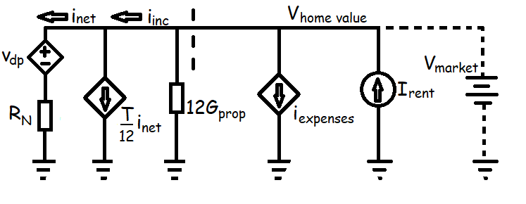

Price Floor (c = 1) Model
The mortgage calculator demonstrated an important result: there is a constant, denoted RN, which relates monthly mortgage payments to inital loan principal and depends only on a geometric series of the interest rate (i) and loan term (N) — most importantly RN is a constant, independent of loan size.
This constant is like , where current (I) is akin to monthly mortgage payments and voltage (V) is akin to loan principal. We define a variable p to be the monthly mortgage payment such that
where dp is the down payment percent (in fractional form).
This Ohm's law relationship inspires creation of a circuit model for home prices. The analysis of property prices begins with estimating the rent the property could fetch and the sum of all operating expenses a landlord would face based on current market prices. Property taxes Gprop (% annually) are broken out separately from the other expenses because they are based on home value.
After operating and ownership expenses are paid for, what remains is gross income (iinc) for the landlord. We do not classify mortgage payments as an operating expense, therefore income tax T (% annually) is proportional to gross income (iinc). What remains we define as net income (inet).
What we have described so far is not a very interesting circuit, it is basically a current node with several independent and dependent current sources and a floating voltage. But if we complete the circuit with RN such that , the model will determine the home price below which a landlord would have monthly profits in excess of the the mortgage payment, i.e. positive cash flow.
In a well functioning market with mortgage lending available, you would not expect to find any usable homes at this price because if home building/maintaining were this inexpensive relative to rents many would be building or buying to get out of renting. Therefore, resulting from completing the circuit with , we call this value Vfloor, and we call this floor value of the monthly mortgage payment q.
and
When a home buyer and seller agree to a sales prices different from the buyer's Vfloor, the buyer becomes a new independent voltage (cash) source that makes up for non-zero monthly cash flows. We define a ratio (c) in terms the agreed upon market price relative to Vfloor.
If the E/P of the mortgage principal is constant, what other landlord expenses are proportional to rental propery value? Property taxes, income taxes, and to some extent utilities, insurance, etc. Thus these expenses can be normalized into constant price to expense (P/E') ratios with an accurate appraisal of property value and expenses.
The constant P/E of the mortgage and P/E's of other expenses can be represented schematically by resistors in parallel with an independent source, which is either the purchase price (like Voltage) or monthly rent income (like Current), such that Property Value = (R1||R2||R3...) × Monthly Rent
The Next Step
In the model the estimated value forms a lower limit on the fair price of a property. Take the net monthly income to the (1) mortgage calculator to compare the asking price to other investments.
This is the second article (2) of a series Should I Buy or Rent? Monthly "R" constants used in this model are calculated from (3) normal expenses for a property or local area.